New Orleans
The American Library Association annual conference took place in New Orleans this year. I waited until the last minute to decide to attend, but in late June I joined thousands of other librarians and archivists for a week in a truly lovely city.
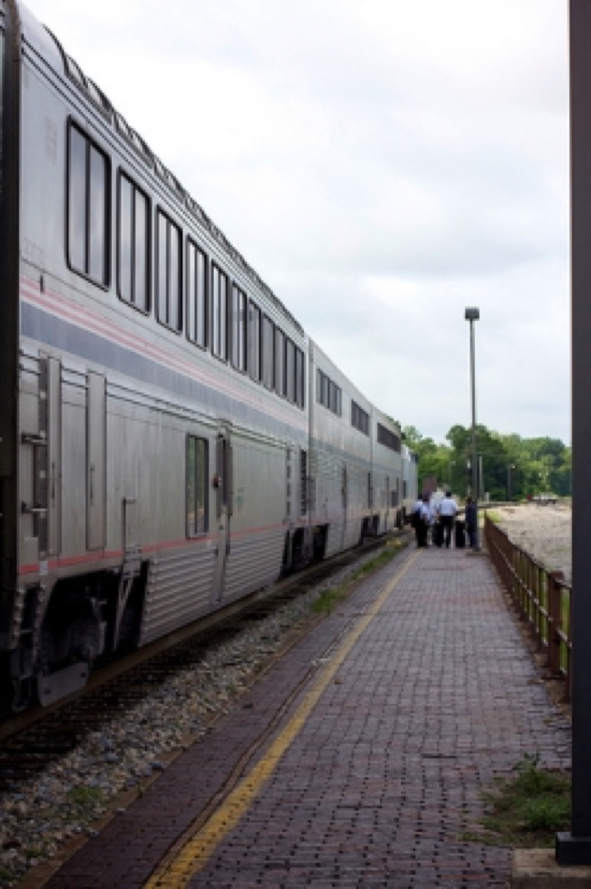
It's no secret that I have a special place in my heart for long-distance train travel. I take the City of New Orleans route between Chicago and Champaign several times a month, but this was my first ride heading all the way south on this line. Most of the daylight hours on the 17 hour trip are spent traveling through the beautiful state of Mississippi and the end of the route skirts Lake Pontchartrain before arriving in New Orleans.
I'd visited New Orleans before, but several years ago when I was still a teenager. I remember the trips fondly, but they were fairly limited in location and activity.
I am lucky to have two warm and generous friends, Will and Jeanne, living in New Orleans who hosted me in the Bywater neighborhood. On my frist night, we went out for fried shrimp po'boys from Parkway and saw the Stooges Brass Band play at the Hi-Ho. The musicians were stacked three deep on the small stage and kept us out late. It was the perfect introduction to the city and away from the typical tourist path.
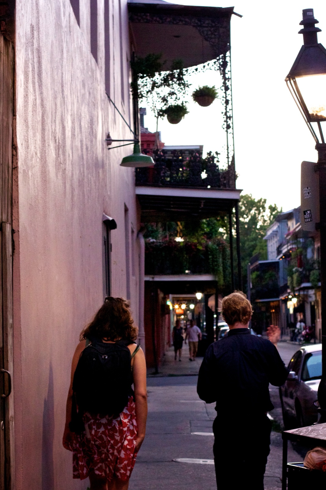
We were fortunate to enjoy wonderful weather. The week of rain that had been predicted held off for the most part. It was hot, for sure, but it was pleasant enough for walking, biking, and plenty of patio dining.
The population of New Orleans is just shy of 350,000 people (nearly 30% less than a decade ago), and 20,000 librarians flooding the convention and French Quarter districts made quite an impact. Nearly every place I went, I spotted hip glasses, vacation smiles, and sensible shoes.
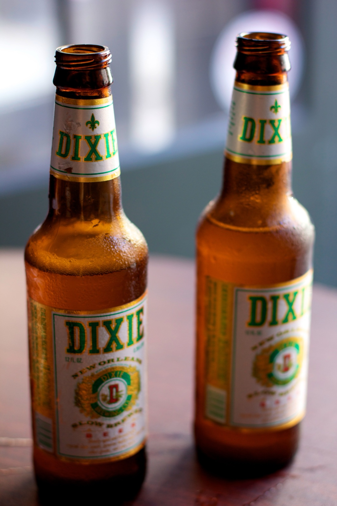 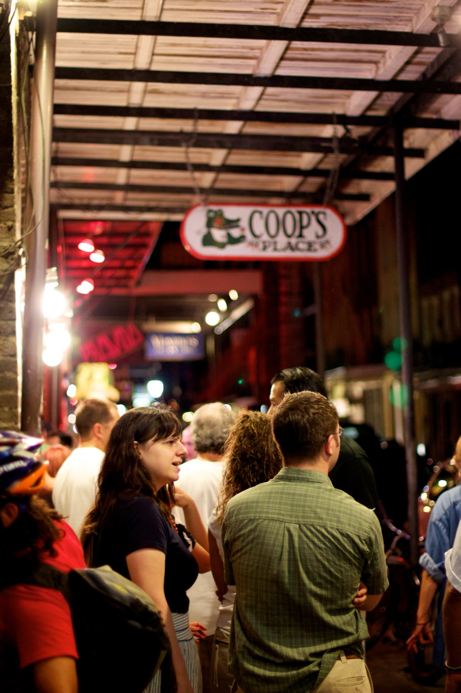
I love to eat and drink, though I tend to keep a fairly vegetarian diet, making exceptions for local fare and well-raised meats. New Orleans cast a spell on me and I wound up eating more meat in five days than I have eaten in the last ten years combined (no joke). This is a city that has immense pride in their culinary traditions and it was a joy to take part. At Coop's, I went so far as to order the Taste Plate and did my best to wade through Seafood Gumbo, Shrimp Creole, Cajun Fried Chicken, Red Beans & Rice with Sausage, and Rabbit & Sausage Jambalaya.
The best meal of my trip was at Boucherie where we ate mussels, hamachi, smoked scallops, ribs, and crispy duck confit with cucumber dill salad and sauce gribiche (pictured above). Every dish was beautifuly presented, fresh, and complex. The meal was reasonably priced and the service was wonderful. Chef Nathanial Zimet was recently shot in front of his home. He survived, thankfully, but is facing daunting medical bills. If you are planning a trip to New Orleans soon, don't miss the chance to enjoy a superb meal and support this business.
After dinner, we enjoyed blueberry mojitos at St. Joe's Bar on their dreamy patio. The midwest could certainly learn a thing or two about outdoor hospitality from our southern friends. The outdoor bar, breezy fans, and gently rocking lanterns made for a serene evening.
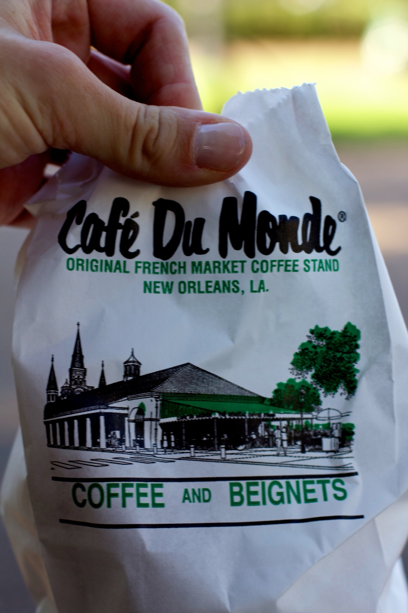
I enjoyed several excellent breakfasts in New Orleans. One morning, I skipped an early conference session and met Julia - my friend, fellow student, and daily companion for the week - for our obligatory visit to Café du Monde.
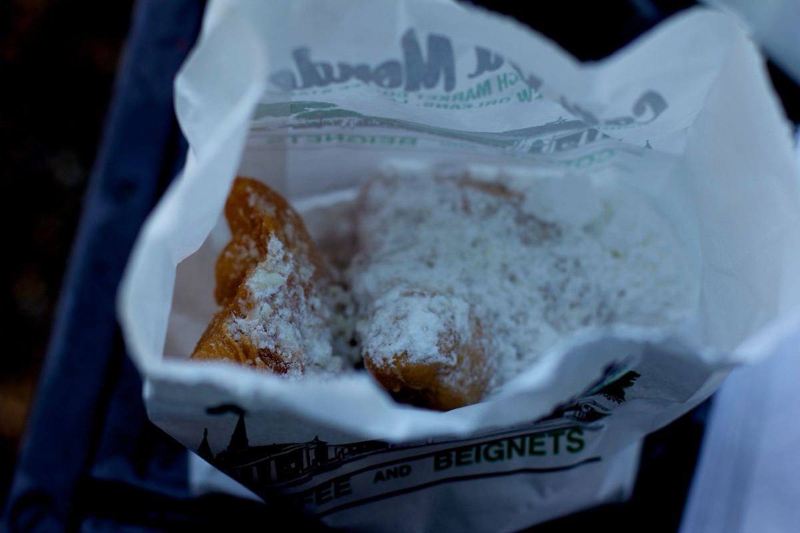
The beignets were just as flaky and sugary as I remembered, and the to-go line made for a quick wait followed by a leisurely rest in Jackson Square Park.
A few miles away in the Bywater neighborhood is Satsuma, a bustling coffee shop with a fairly extensive menu and delicious food. The beet lemonade and bacon, egg, and cheese on a cheddar biscuit were simple, but extremely satisfying.
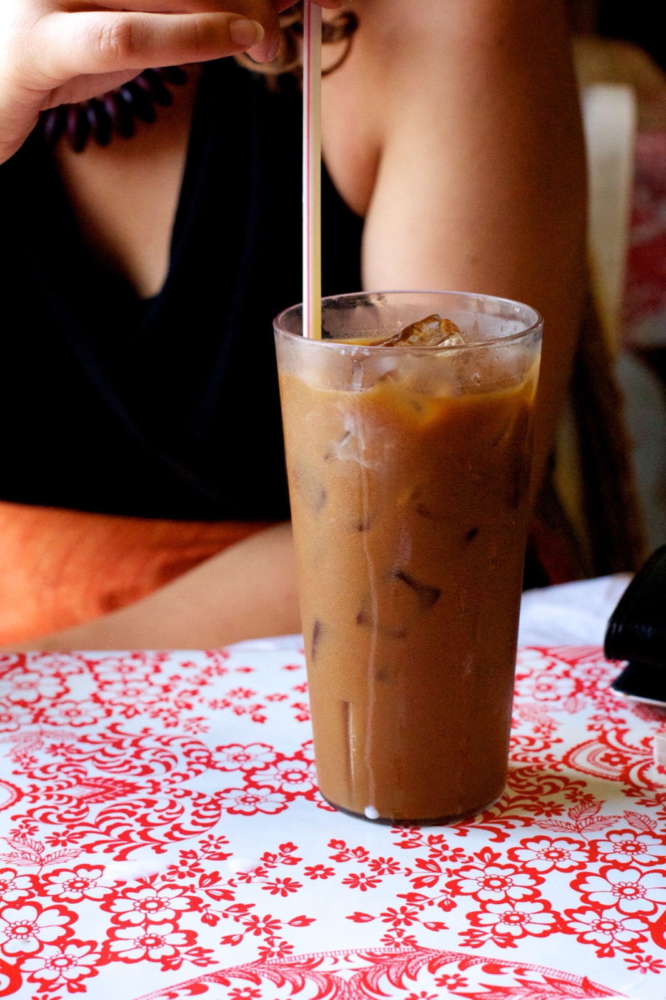
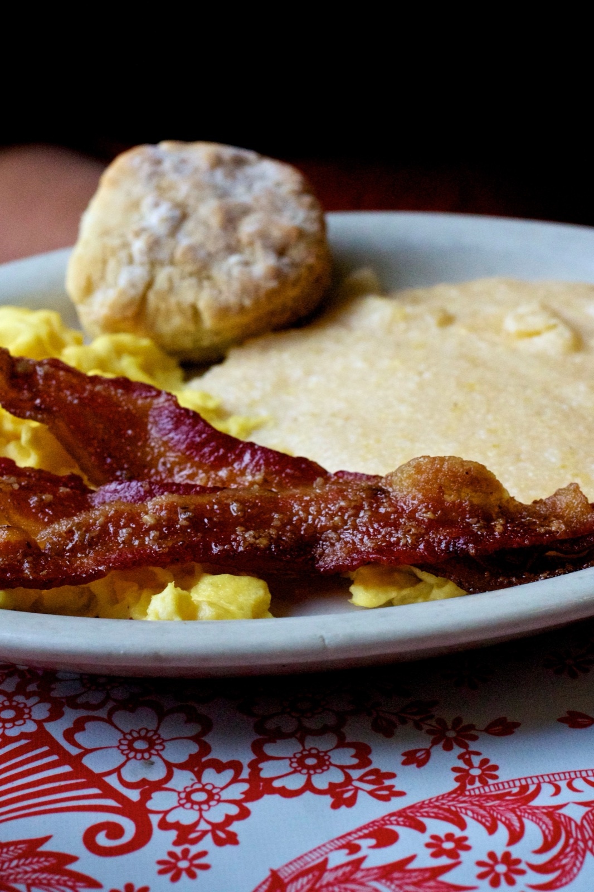
Elizabeth's, just a few blocks away in Bywater, served the last great breakfast of the trip. It is a fairly plain looking restaurant. However, their eggs, cheddar grits, biscuit, and praline bacon are anything but.
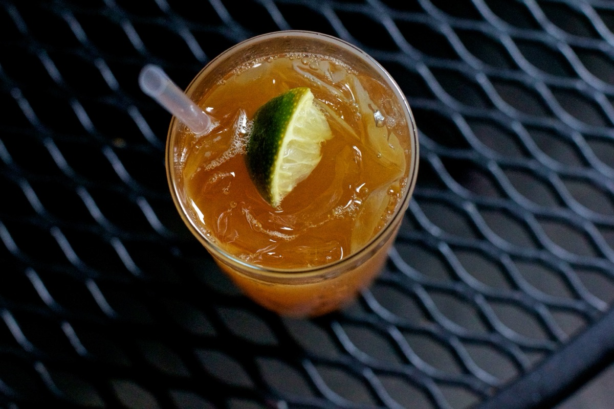
After our last full day at the conference, I realized I had yet to have a Pimm's Cup, Sazerac, or Muffuletta - three items with a strong attachment to the city.
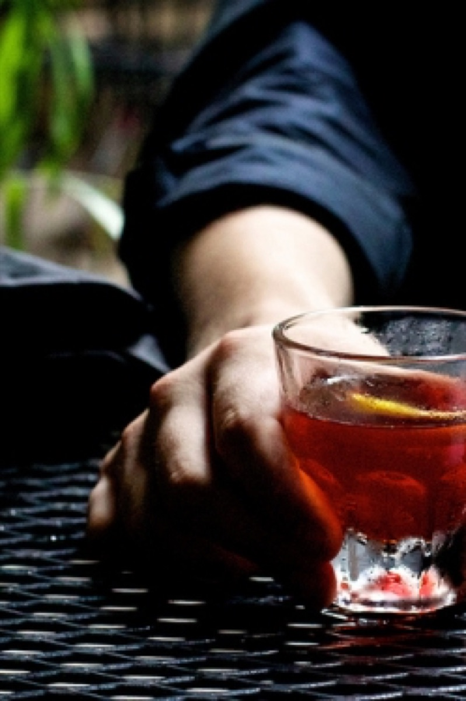
I made my way over to Napoleon House with a few friends and set out to correct that. It had just rained, and the gorgeous patio was nearly empty.
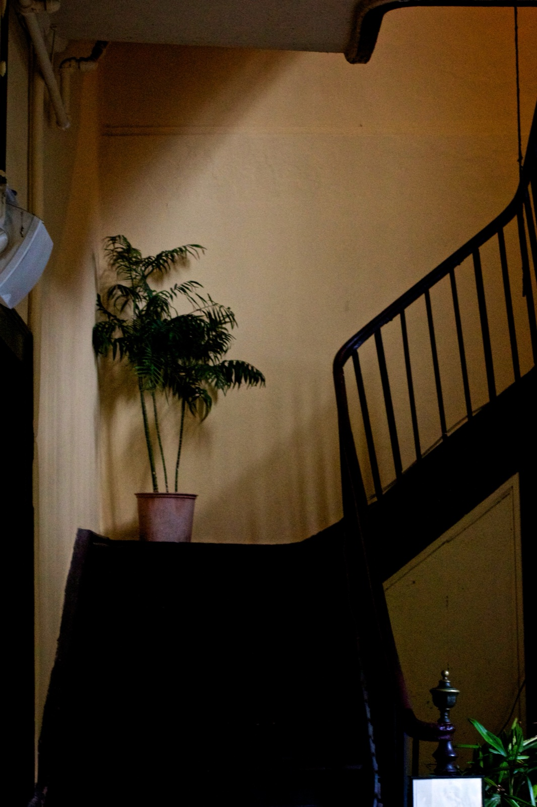 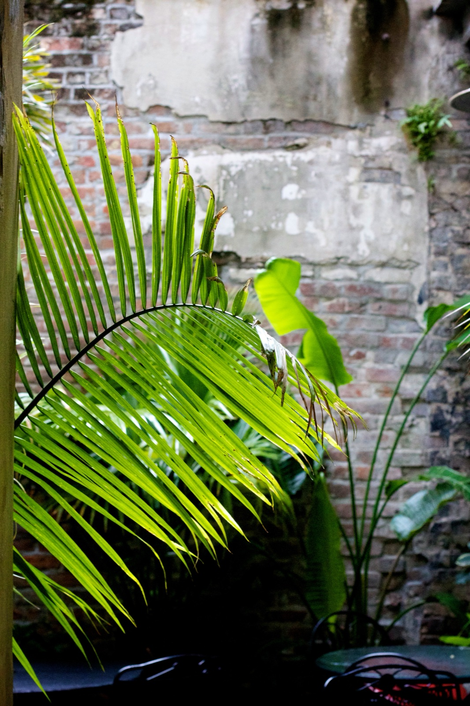
Napoleon House has been around since 1797. While nothing we ordered was amazing (lime and no cucumber in the Pimm's Cup...), the venue was truly impressive. It was full of old wood, ferns, and natural light.
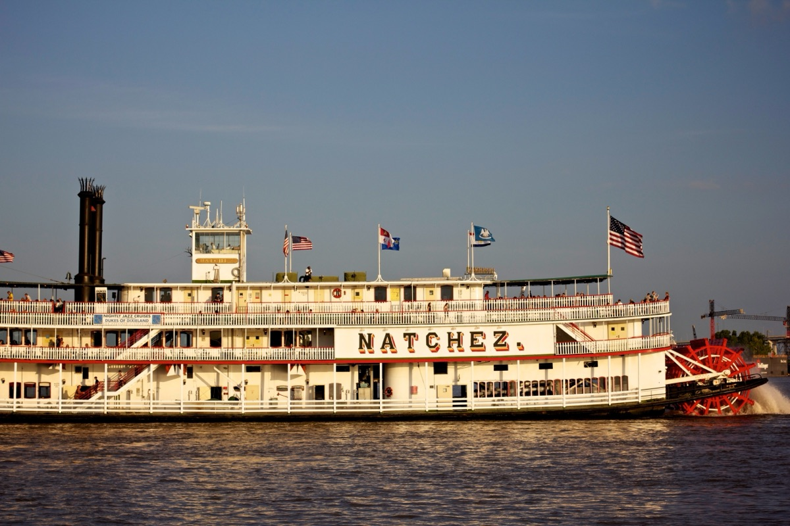
New Orleans is a welcoming, bike-friendly, laid-back city. It's full of amazing food, vibrant colors, and great music. I'd like to see more of the south. I tend to stay above the 37th parallel, but I think I've been missing out.
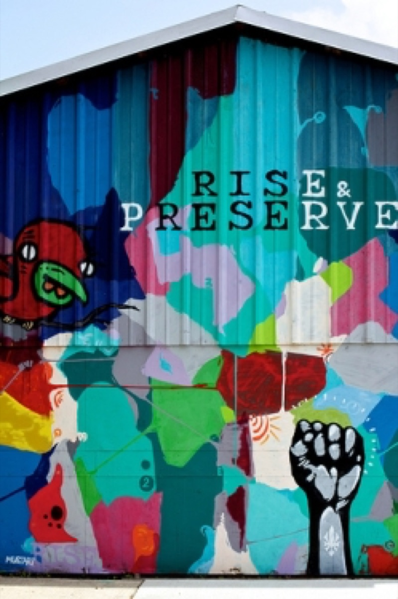
I'm incredibly grateful that I had the opportunity to become reacquainted with New Orleans, reconnect with Will and Jeanne, and become more engaged in my professional community. It was a fun and invigorating trip.
You can find more pictures here.